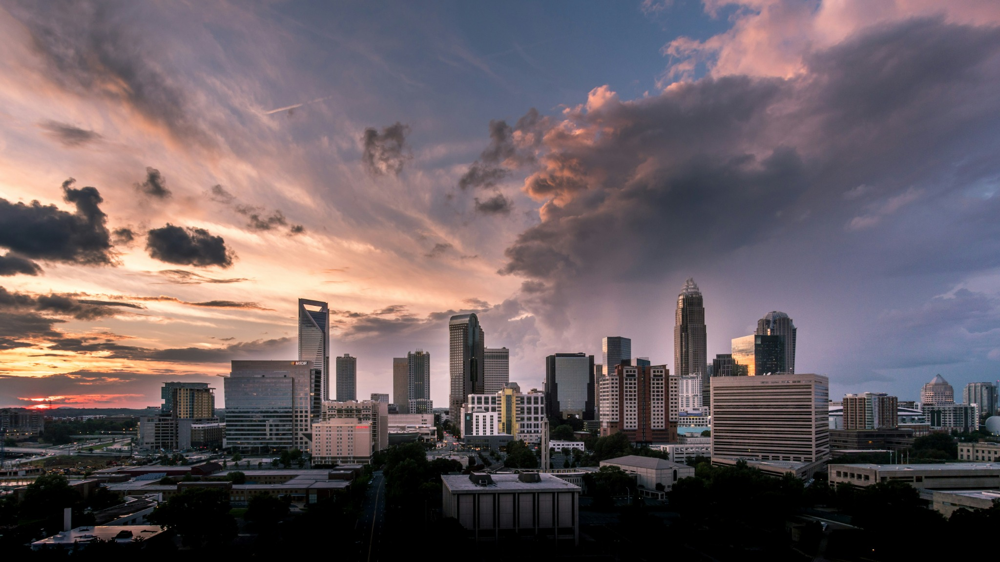

2011
NC State University
B.S. Environmental Technology & Management
A foundation in environmental science, natural resources, and practical environmental management.
Independent Environmental Solutions
Environmental assessments designed to help property owners, businesses, and contractors understand their buildings and move projects forward with confidence.
Grandfather Mountain — Wes Hicks / Unsplash
The IES perspective
Every building has a history. Some stories are visible while others are hidden within building materials, above ceilings, behind walls, or beneath flooring.
The idea is to uncover those stories and what they mean so you can move forward with confidence.
See how IES works →
About Independent Environmental Solutions
Independent Environmental Solutions was built around a simple idea: environmental consulting should give clients clarity, not just more information.
My background spans environmental field operations, regulatory compliance, health and safety, and indoor environmental consulting. Across those roles, I've learned that good technical work matters just as much as clear and careful observations to help people decide what to do next.
2011
B.S. Environmental Technology & Management
A foundation in environmental science, natural resources, and practical environmental management.
Field Experience
Environmental remediation systems · Field leadership · Health & safety · Regulatory compliance
Years spent working where plans and regulations meet real world conditions.
Built Environment
Asbestos · Mold · Moisture · Indoor environmental quality
Bringing field experience indoors, investigating conditions, interpreting findings, and helping clients understand what they mean.
Today
Bringing those experiences together in an independent practice built around clear observations, practical guidance, and confident decisions.
The Person Behind IES
I'm drawn to work that requires figuring out what's actually happening.
Environmental consulting gives me the opportunity to combine clear observations and technical information with practical problem-solving.
My goal is to do careful work, communicate it clearly, and give clients information they can actually use.
“Good decisions begin with good observations.”
Independent Environmental Solutions
Request a ConsultationThe IES Method
Careful field assessments grounded in experience, precision, and attention to detail.
Representative samples and accredited laboratory analysis when testing is appropriate.
Technical information translated into language that is practical and easy to understand.
Recommendations designed to support sound planning and informed decisions.
How IES can help
We begin with a discussion to help determine the assessment that best fits your needs.
Understand building materials before renovation, demolition, or any other disturbance.
Learn more →Identify moisture-related conditions and understand the factors contributing to them.
Learn more →Evaluate environmental conditions related to occupant comfort and building performance.
Learn more →Find the source of water intrusion and document the conditions affecting the building.
Learn more →Why clients choose IES
Every assessment is built around three questions:
That's why every report is designed to help clients make confident decisions.
Featured Assessments
The assessments are designed to make complex environmental information easy to understand, verify, and act on.
View an Example AssessmentUnderstanding Your Results
Clear findings and practical solutions.
Knowledge Library
Practical guidance for planning, evaluating, and understanding environmental assessments.
North Carolina and Beyond
You don't need to know exactly what type of assessment you need. Describe what you're seeing, planning, or concerned about.
Jordan Lake — Lawrence Melosantos / Unsplash
Request a Consultation
Share what you know. A few basic details are enough to begin the conversation.